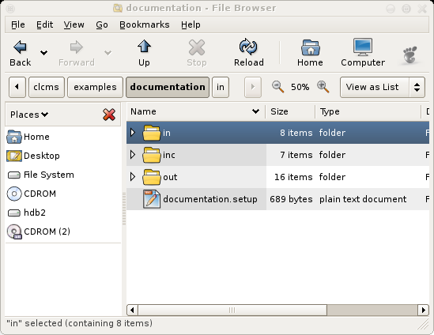
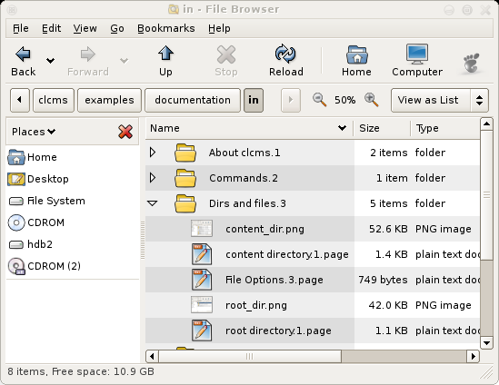

Root Directory
Let's take a quick look at the root directory (i.e. the directory where you
run clcms from).

You see a few subdirectories and a file ending in .setup. The .setup file
contains directives for clcms to follow.
If clcms encounters a .setup file while walking through the directory tree,
it will follow these new directives in it for the current directory and all
subdirectories of the current directory. The rest of the tree is unaffected.
This is the first way to override settings.
In this case, the .setup file specifies that the content tree is in the
directory in/, that the output should be sent to out/, and some header and
footer files that will be handled by clcms are in inc/.
documentation.setup:
footer_files = inc/footer.inc
header_files = inc/header.inc
menu_item1_start = inc/menu_item1.inc
menu_item1_end = inc/menu_end.inc
menu_item2_start = inc/menu_item2.inc
menu_item2_end = inc/menu_end.inc
menu_item3_start = inc/menu_item3.inc
menu_item3_end = inc/menu_end.inc
menu_end_files = inc/menu_end.inc
menu_start_files = inc/menu_start.inc
menu_depth = 3
out_dir = out
in_dir = in
root_dir = .
Content Directory
The content directories are where the important stuff is at. While it might
take you a while to get your settings and layout in order, once you have
done that, you should only be working in the content directory for your
daily website update needs.

Every (sub)directory in the content directory that contains one or more
files ending in .page will be transformed into a website page. The idea is
that you can store everything that is relevant for a certain page in the
same directory as the page itself (of course, you don't have to, but it's
kind of what I had in mind designing this). You can group pages of the same
topic by putting their directories in an encompassing higher directory, and
optionally provide that directory with web page content. For instance, i
have a page called Projects with some general information on my current
projects, and in the page directory if have separate directories for all my
projects. Which might have their own subdirectories if they are very big.
Kind of like a top-down view of content separation. But i digress.
clcms will first check if there is an overriding .setup file (see
root directory for an explanation about .setup files).
After that, it will parse every .page file and turn it into an index.html.
By default, if there is more than 1 .page file, it will prepend the html
lines of each with a header containing the file name up to the first dot. If
show_item_title_date is set to 'yes' (see
Options
for a complete list of settings) it will also add the last modified date to
the header.
The order in which clcms will handle these files is based on their Last
modified time. It will place newer files (and files that have been changed)
on before older ones. This way, when you have, say, a blog, you can just
type your news to a new file, and it will be on the top of your page.
Every subdirectory will be handled as a separate page.
Every other file will simply be copied to the page output directory.
You can override the ordering of files by setting putting .<number> in the
file name (for instance, importantNews.1.page). Only the first filename
option will be seen as ordering information.
File Options
You can override some behaviour of clcms by putting .<option> in the file
name. The ordering seen in
content directory is only
one example of this.
The complete list of options is:
-
For all files:
-
number
Sort order of this file. This one is only handled if this is the first option
-
For .page files:
-
nosubmenu
This part will not be put in the submenu
-
notitle
This part will not be preceded by its filename title
-
title
This part
will
be preceded by its filename title
-
nowiki
This part will not be put through the wiki engine
-
wiki
This part
will
be put through the wiki engine
-
For directories:
-
nomenu
This page will not be put in the main menu